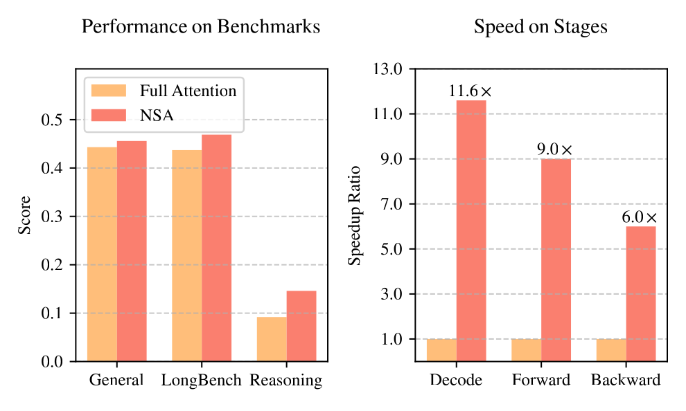
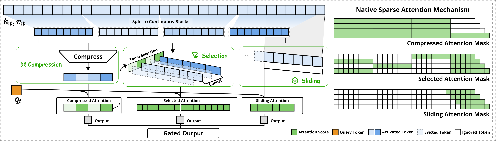
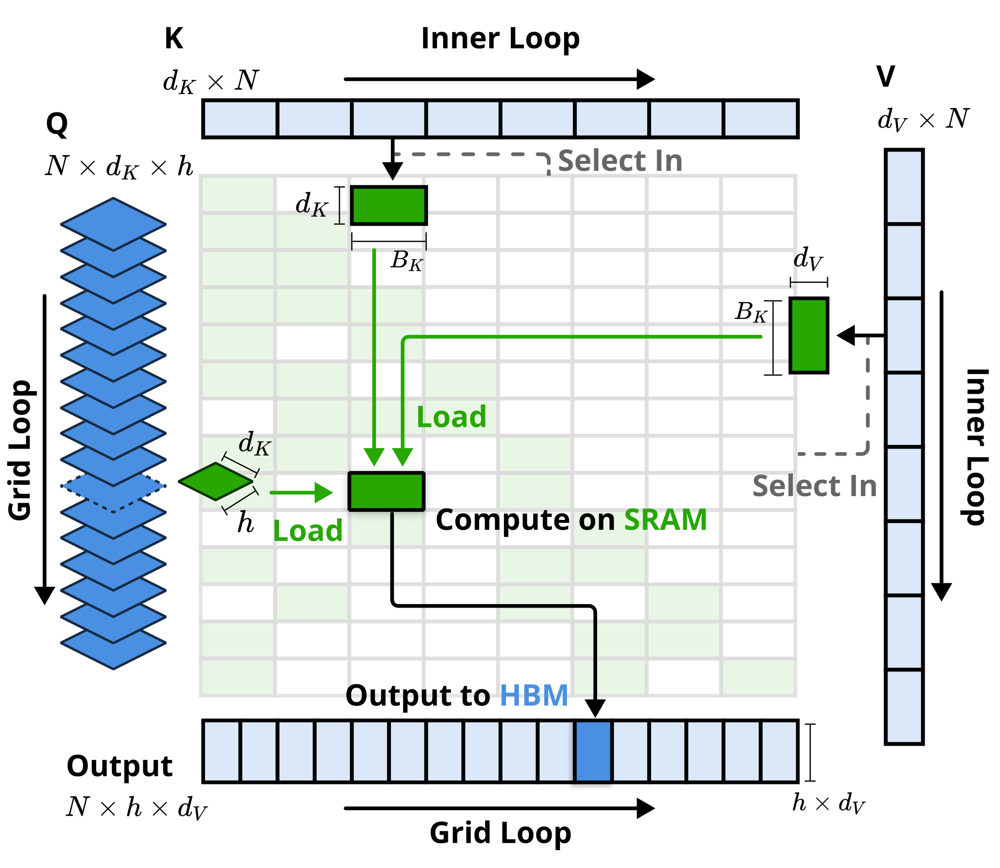
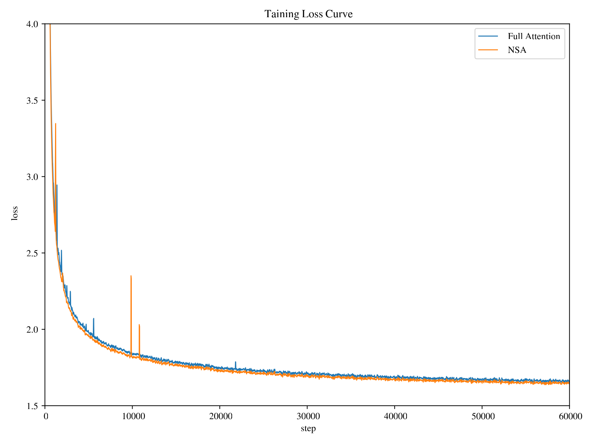
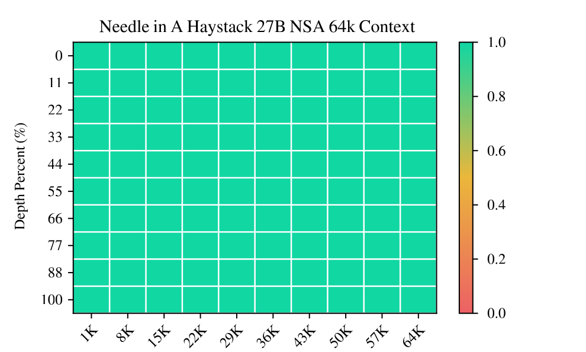
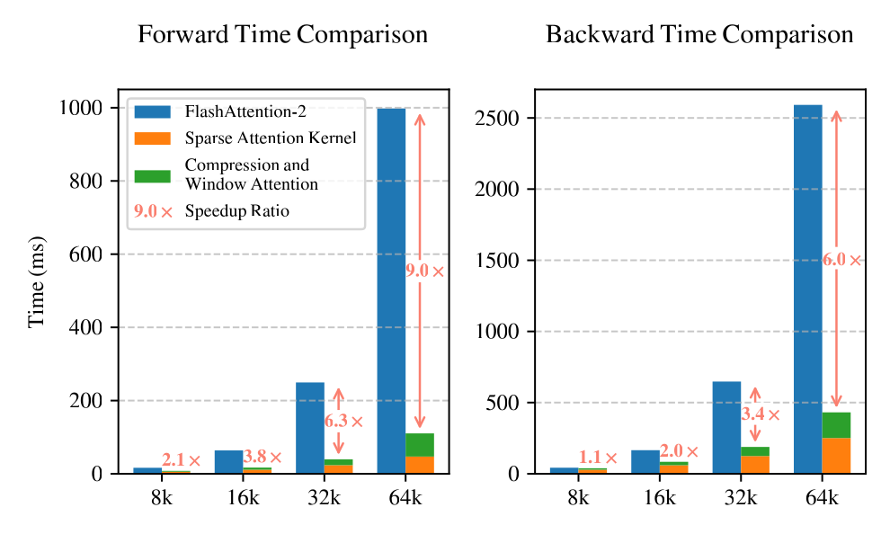
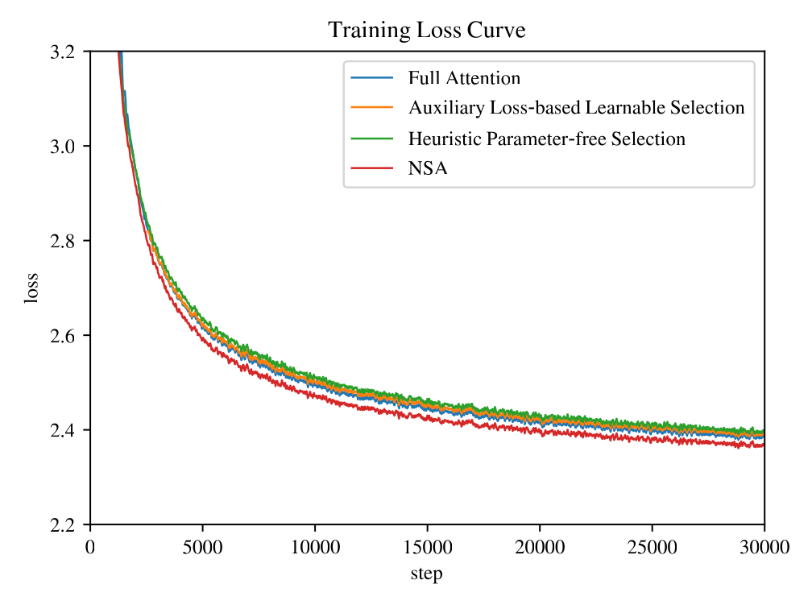
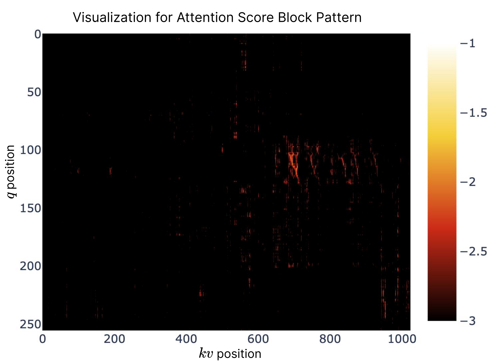

NSA: Native Sparse Attention
硬件对齐、原生可训练的稀疏注意力
摘要 & 一图速览
NSA 是 DeepSeek 与北大、华盛顿大学合作的原生可训练 (natively trainable) 稀疏注意力架构—— "原生"意味着 sparsity 不是事后剪枝得到，而是从预训练第一步就以 sparse 形式参与梯度。 论文的两条主张可以一句话概括：
主张二（速度）：在 64K 上下文 + 8×A100 上，NSA 取得 9.0× 前向、6.0× 反向、11.6× 解码 加速。 关键不是"理论 FLOPs 砍多少"，而是 sparse 结构与硬件 (Tensor Core / GQA group / 连续 KV 块) 对齐。

1. 引言：长上下文 & sparse attention 的两块短板
长上下文已经从"奢侈品"变成"刚需"——repo 级代码生成、多轮 agent、deep research、CoT 推理都要求模型在 64K–128K 范围里不掉精度。 但 vanilla softmax attention 的 $O(L^2)$ 复杂度让它在长序列里成为绝对瓶颈：论文开门给出一个具体数据， 当上下文达到 64K 时，attention 占 decoding 总延迟的 70–80%。 也就是说，KV cache 再小、MLP 再快，attention 不快下来整体也快不了。
把 attention 砍稀疏看似显然：softmax 本来就有"少数 query–key 对贡献了大部分能量"的天然 sparsity。 但论文紧接着指出现有 sparse attention 的两块短板，恰恰对应它要解决的两个问题：
许多方法（H2O、Quest、MInference、ClusterKV）只在某个 phase 有 sparsity—— 例如只优化 decoding，prefilling 仍然要做完整的 attention map / 索引构建； 又或者它们与 GQA / MQA 这种"分组共享 KV"的现代架构不兼容（每个 head 独立选 KV，导致 GQA group 内的 KV 必须取并集，省不下访存）。 最终：理论 FLOPs 大幅下降，wall-clock 几乎不动。
(1) Performance Degradation：对预训练好的 dense 模型 post-hoc 稀疏化等于强制偏离原本的优化轨迹。 论文引 Chen 2024 的数据：top-20% attention 只覆盖 70% 注意力分数总能量——剩下 30% 不可忽略。 (2) Non-trainable Components：ClusterKV 的 k-means 聚类、MagicPIG 的 SimHash 选 token 都是离散操作，不可微， 直接挡住梯度。 (3) Inefficient Backward：HashAttention 这类 token-granular 选择会让 KV 加载非连续，FlashAttention 那套连续访存 + blockwise 计算的快路径直接失效。
NSA 的判断很直接——既要硬件对齐，又要原生可训练，那就从架构层重新设计， 而不是把现成 sparse attention 改一改套上去。这就是接下来三件事：(1) 三分支 + 门控的总框架； (2) 重用 compression scores 当作 selection scores（避免重新算 importance 的额外开销）； (3) 围绕 GQA 写一个把"组共享 KV 块"放到 SRAM 里跑的 Triton kernel。
2. 既有方法为何不够用
2.1 The Illusion of Efficient Inference
论文把"理论快但实际慢"归到两个具体原因：
- Phase-Restricted Sparsity：方法只覆盖部分阶段。H2O 优化 decoding 但 prefilling 仍要计算 full attention map 来挑 heavy hitters；MInference 反过来只优化 prefilling。 对 long-CoT 推理（decoding 主导）或文档总结（prefilling 主导）来说，未覆盖的阶段成为新的瓶颈。
- 架构不兼容：Quest 在 MHA 上确实降访存——每个 head 独立选 top-n KV 子集； 但移到 GQA 上，同组 head 共享 KV cache，多个 head 各选各的 KV → 实际加载的是并集，访存量并未下降。 这是 sparse 算法层面看不到、只有真正部署在 GQA 模型上才会撞到的坑。
2.2 The Myth of Trainable Sparsity
"理论上可训练"和"工程上可训练"差很远：
- 非可微部件：ClusterKV 用 k-means、MagicPIG 用 SimHash，selection step 不可微，梯度被挡住。
- 反向传播低效：HashAttention token 级选择导致 KV 加载离散——FlashAttention 的连续访存优化直接报废。
- 分布漂移：post-hoc 把 dense 模型剪成 sparse，原本"retrieval head"这类高度专精的注意力结构会被误剪——预训练里它们才是关键。
这两节一起把"为什么必须做 native sparse"讲清楚：选择必须可导、kernel 必须连续访存、训练必须从第一步就稀疏， 缺一个，前述短板就会冒出来。
3. NSA 方法
3.1 三分支 + Gate 的总框架
令 query token 为 $q_t$，前缀的 key/value 序列为 $\mathbf{k}_{:t}, \mathbf{v}_{:t}$。NSA 不再用全部 key/value 做 attention， 而是构造一组压缩、信息密度更高的 $\tilde{K}_t, \tilde{V}_t$——它由三条互补的分支拼成：
三条分支各司其职：
- cmp（compression）：把每个连续 key/value 块压成一个"摘要 token"——粗粒度全局视野；
- slc（selection）：基于 cmp 算出的注意力分数，挑出 top-n 个最相关 block 做细粒度稠密 attention；
- win（sliding window）：保留最近 $w$ 个 token——专门承担局部模式，避免局部信号"短路"前两条分支。
$g_t^{c} \in [0,1]$ 是 gate score，由输入特征通过 MLP + sigmoid 得到。三条分支的 KV 是独立的—— 论文特别强调这一点：让每个分支学习自己专精的模式，互不干扰梯度。三条分支总 token 数 $N_t \ll t$，是稀疏度的关键。

3.2 Token Compression：用 MLP 把 block 压成"摘要 token"
把 key 序列按块长 $l$、滑动步长 $d$ 分块，对每块用一个带块内位置编码的可学 MLP $\varphi$ 压成一个向量：
论文采用 $d < l$，让相邻块有重叠，缓解信息碎片化。块内位置编码很重要——MLP 否则只看到一个无序集合，丢掉块内顺序。 $\tilde{V}_t^{\mathrm{cmp}}$ 同理。这一支扛起全局粗粒度信息，并且——这是设计上的妙处——它的 attention scores 还要被复用来给"selection"打分（见 3.3）。
3.3 Token Selection：直接复用 cmp 的分数挑 top-n 块
只用压缩 token 会丢失关键细节，所以 NSA 还要在原始（未压缩）的 KV 序列上做稠密 attention， 但只在选中的 block 子集里做。难点是：怎么以低代价挑出"最相关"的若干块？
关键 trick：把 cmp 的注意力分数当成 selection 的 importance score。 计算 $q_t$ 对 $\tilde{K}_t^{\mathrm{cmp}}$ 的 softmax 输出 $\mathbf{p}_t^{\mathrm{cmp}}$，这本来就是 cmp 分支的中间结果，不需要额外计算。 再把它映射到 selection block：
第二式处理 cmp block 与 selection block 大小不一的情况（$l, d$ 与 $l'$ 满足整除关系），等价于把 cmp 上的 softmax 分数重叠求和对齐到 selection block。 当 $l' = l = d$（块对齐）时直接 $\mathbf{p}_t^{\mathrm{slc}} = \mathbf{p}_t^{\mathrm{cmp}}$。
对 GQA / MQA，同组 head 必须选同一组 block，否则 KV cache 加载将变成各 head 选择的并集（这就是 Quest 在 GQA 下失效的原因）。 NSA 让组内 head 的 importance 累加：
然后取 top-$n$ block：
实际配置里还固定保留 1 个 initial block + 2 个 local block（共 16 个 selection block 中）， 让模型对开头的 system prompt 与最近上下文有保底访问。
这套做法的高明之处在于selection 全程可微——top-n 操作虽然离散，但 selection 的得分来自 cmp 分支的 softmax， 梯度可以经由 cmp 分支回传到主干网络（top-n 选择本身用 stop-gradient 处理）。 对比 ClusterKV / HashAttention 等用 k-means / SimHash 的做法，这是 NSA 最关键的"原生可训练"机制。
3.4 Sliding Window：把局部模式从 cmp/slc 中"剥离"
论文观察到局部 attention 模式学得快、信号强，会"短路" cmp 与 slc 分支—— 模型偷懒走 sliding 那一支就够了，cmp 与 slc 永远学不出全局/中距能力。 解法是给 sliding 单独建一个分支：
$w = 512$，三分支 KV 都是独立参数。这种"独立 KV + gate 加权"的设计在论文里被反复强调 ——它本质上是给 cmp/slc/win 三种学习目标各造一个"专家"， 并通过 gate 让模型按 query 决定每个时刻该听谁的。
3.5 Kernel：以 GQA group 为单位 load 共享 KV 块
NSA 的算法层是 sparse 的，但稀疏到底能不能转化为 wall-clock 提速，取决于 kernel。 作者用 Triton 写了三个 kernel：cmp 与 win 直接复用 FlashAttention-2，关键是 selection 分支的 sparse kernel。
朴素做法是按 FlashAttention 的方式按 query block 加载到 SRAM—— 但 sparse selection 下，同一个 query block 内的不同 query 要访问的 KV block 是不一样的（disjoint）， SRAM 局部性彻底失效。
NSA 的 trick：不按 query token 而按 GQA group 切分。 对每个 query 位置 $t$，把同组的 $h$ 个 head 的 query $Q\in \mathbb{R}^{[h, d_k]}$ 一次性 load 进 SRAM， 它们已经被 selection 算法约束共享同一组 KV block 索引 $\mathcal{I}_t$， 然后内层循环按顺序加载这些 KV block 到 SRAM 计算。

三个核心设计点：
- Group-Centric Data Loading：外层按 query 位置遍历，每次把整组 head 的 query 一起 load，避免重复加载 KV block；
- Shared KV Fetching：内层按 $\mathcal{I}_t$ 加载连续 KV block 到 SRAM（block 大小 $B_k$ 满足 $B_k \mid l'$），使每个 KV 在 SRAM 中只被读一次；
- Outer Loop on Grid：因为不同 query 的内层循环长度（$\propto n$）相近，把 query loop 直接放到 Triton 的 grid scheduler 上，不需要手写 load-balance。
这套设计的目标是arithmetic intensity（每次访存对应的算力 utilization）逼近最优： 对训练 / prefill 这种 compute-bound 阶段，要把 Tensor Core 喂饱； 对 decoding 这种 memory-bound 阶段，要让 KV 访存量最小。后者 NSA 的稀疏性直接转化为加速。
4. 实验
4.1 27B/3B 预训练设置

4.2 通用 benchmark：稀疏不掉点，反而 7/9 反超
| 模型 | MMLU | MMLU-PRO | CMMLU | BBH | GSM8K | MATH | DROP | MBPP | HumanEval | Avg. |
|---|---|---|---|---|---|---|---|---|---|---|
| Full Attn | 0.567 | 0.279 | 0.576 | 0.497 | 0.486 | 0.263 | 0.503 | 0.482 | 0.335 | 0.443 |
| NSA | 0.565 | 0.286 | 0.587 | 0.521 | 0.520 | 0.264 | 0.545 | 0.466 | 0.348 | 0.456 |
9 个 benchmark 中 7 个 NSA 反超，平均分 +1.3。 论文最看重的是 reasoning 类涨幅：DROP +0.042、GSM8K +0.034， 作者解读为"稀疏 pretraining 强迫模型聚焦关键 token，等价于一种隐式 noise filtering 正则"。 唯一被 Full Attn 反超的两项 (MMLU、MBPP) 差距 ≤ 0.016，可视为持平。
4.3 长上下文与 NIAH

| 方法 | MFQA-en | MFQA-zh | Qasper | HPQ | 2Wiki | GovRpt | Dur | PassR-en | PassR-zh | LCC | Avg. |
|---|---|---|---|---|---|---|---|---|---|---|---|
| H2O | 0.428 | 0.429 | 0.308 | 0.112 | 0.101 | 0.231 | 0.208 | 0.704 | 0.421 | 0.092 | 0.303 |
| InfLLM | 0.474 | 0.517 | 0.356 | 0.306 | 0.250 | 0.277 | 0.257 | 0.766 | 0.486 | 0.143 | 0.383 |
| Quest | 0.495 | 0.561 | 0.365 | 0.295 | 0.245 | 0.293 | 0.257 | 0.792 | 0.478 | 0.135 | 0.392 |
| Exact-Top | 0.502 | 0.605 | 0.397 | 0.321 | 0.288 | 0.316 | 0.291 | 0.810 | 0.548 | 0.156 | 0.423 |
| Full Attn | 0.512 | 0.623 | 0.409 | 0.350 | 0.305 | 0.324 | 0.294 | 0.830 | 0.560 | 0.163 | 0.437 |
| NSA | 0.503 | 0.624 | 0.432 | 0.437 | 0.356 | 0.307 | 0.341 | 0.905 | 0.550 | 0.232 | 0.469 |
NSA 在 LongBench 上拿到 0.469 平均分，比 Full Attention 高 +0.032、比 Exact-Top（精确 top-n）高 +0.046。 论文特意指出三个最有意思的细节：
- 多跳 QA：HPQ +0.087、2Wiki +0.051——多跳推理需要跨段聚合，正是 cmp + slc 这种"全局看摘要、局部钻细节"组合的甜区；
- 代码理解：LCC +0.069——repo 级代码理解依赖跨文件的稀疏长程依赖；
- 段落检索：PassR-en 0.905（其他方法多在 0.7–0.83）——这正是 NIAH 那种风格的任务，NSA 的稀疏路径不丢精度。
对照 baseline 列：H2O / InfLLM / Quest 平均分都被 Full Attn 显著压住， 说明"取一段 KV 子集做 attention"在没有原生训练支撑时确实有信息损失； 而 NSA 反过来超过 Full Attn——这只能用"稀疏作为正则"来解释。
4.4 CoT 数学推理：AIME 上 NSA-R 双倍 Full-R
| 生成长度上限 | Full Attention-R | NSA-R | Δ |
|---|---|---|---|
| 8 192 | 0.046 | 0.121 | +0.075 |
| 16 384 | 0.092 | 0.146 | +0.054 |
实验做法是用 DeepSeek-R1 蒸馏：取 10B token 长度 32K 的数学 CoT 数据做 SFT，得到 Full-R 与 NSA-R 两个模型， 在 AIME 24 上各采 16 个 response 取平均。NSA-R 在 8K 长度上几乎是 Full-R 的 2.6 倍准确率（0.121 vs 0.046）， 16K 仍领先 +0.054。论文给出的解释——"原生 sparse 让模型在预训练阶段就锻炼出长程依赖捕捉能力"—— 和 NIAH 那张图、LongBench 多跳 QA 一同形成证据链。
5. 效率分析
5.1 训练 / Prefill 速度：64K 处 9× 前向、6× 反向

具体配置：8×A100、GQA group $g = 4$、组内 $h = 16$ head、$d_k = 192$、$d_v = 128$。 前向 9.0×、反向 6.0× 的差异，论文归到一个具体细节：反向需要重算 attention scores + 累加 dQ/dK/dV gradients， sparse 路径下 dK/dV 的累加要 atomic add 到全局 buffer，比前向多一些同步开销—— 但仍远胜 FlashAttention-2 的 $O(L^2)$。
5.2 Decoding 速度：64K 处 11.6× 加速
| 上下文长度 | 8 192 | 16 384 | 32 768 | 65 536 |
|---|---|---|---|---|
| Full Attention 访存（token） | 8 192 | 16 384 | 32 768 | 65 536 |
| NSA 访存（token） | 2 048 | 2 560 | 3 584 | 5 632 |
| 预期加速比 | 4.0× | 6.4× | 9.1× | 11.6× |
Decoding 是memory-bound 阶段，每步 attention 的访存量直接决定延迟。NSA 每步只加载至多 $\lfloor (s-d)/l \rfloor$ 个 cmp token + $n l'$ 个选中 token + $w$ 个邻居 token。 随着 $s$ 增大，cmp 项是 $O(s/l)$，selection 项是 $O(nl') = O(1024)$ 常数，sliding 是 $w = 512$ 常数——总访存近似 $O(s/l)$ 而不是 $O(s)$，所以加速比随长度线性增长。
在 64K 上加速 11.6× 比前向 / 反向更高，恰好印证了"decoding 的稀疏性折扣最大"—— 因为这里没有 prefill 的 $O(L^2)$ 一次性算力分摊，每个 step 都是独立的 KV 加载瓶颈。
6. 深度讨论
6.1 替代选择策略为何失败
这一节是论文最有"工程教训"的部分。作者在 3B 模型上做了三个对照： (a) Full Attention 基线；(b) Auxiliary loss 学习选块（思路类似 SeerAttention：给每块再算一组 representative key，用 KL divergence 监督 importance 预测）； (c) Heuristic parameter-free 选块（仿 Quest：query 与 key 块的 coordinate-wise min-max 做内积，无需额外参数）； (d) NSA。

论文还试过给 heuristic 选块加 cold-start——前 1000 步用 full attention 再切 sparse，但仍未追上 NSA。 这两个失败案例对应论文 §2.2 提的两类"trainable sparsity"陷阱：
- Aux loss 路线：额外 query / representative key 增加算子开销，KL 监督的偏差还会污染主任务梯度；
- Heuristic 路线：min-max product 的 recall 偏低（论文没给具体数字，但 loss 曲线最高就是结果）；
- NSA 路线：不引入额外打分网络——直接复用 cmp 分支已经算出的 softmax 分数。零额外开销 + 全程可微。
这是 NSA 设计哲学最锋利的一刀：选块不需要单独的"importance head"，cmp 分支本身就是天然的 importance estimator—— 把 sparsity 的全部计算成本压到一条已经必要的路径上。
6.2 Attention 的 block 聚集模式

这张图把 NSA 的"为什么 block-wise 选块不会丢精度"从经验上证明了—— 高分 attention 本来就以小方块出现，block 粒度选择恰好与预训练 dense attention 自发涌现的稀疏结构对齐。 这与 FlashAttention 用 block 做计算分块的工程动机不同：FlashAttention 是为了访存连续， 而 NSA 是把它当成数据先验，去匹配 attention 自身的统计性质。
7. 核心总结：什么值得记住
- "Native"是关键词：sparse 必须从预训练第一步就在，否则模型既学不到稀疏路径也学不到 dense 路径——只在推理时拍稀疏几乎一定掉点。
- 三分支设计的工程妙手：cmp（全局摘要）+ slc（细粒度 top-n）+ win（局部）三路独立 KV + gate 加权。 独立 KV 防止 sliding 短路其他分支，gate 让模型按 query 决策。
- 复用 cmp 分数当 selection 分数是论文最锋利的一刀——不引入额外打分网络、不增加显式损失， sparse 的 importance estimator 就是 dense attention 必算的中间产物，零额外开销 + 全程可微。
- GQA-aware kernel：把外层 grid 切成 GQA group 而非 query block，让组内 head 共享同一组 KV block 索引—— 这是把"理论 FLOPs 节省"转成"wall-clock 加速"的核心工程开关。
- 实验最反共识的一组数据：NSA 在通用 benchmark 上反超 Full Attention 7/9 项，CoT 推理 AIME-8K 是 Full-R 的 2.6 倍。 sparse 不只是"省钱选项"——它对长程推理是正则增益。
- 速度的"长度回报"：64K 上前向 9×、反向 6×、解码 11.6×；序列越长，加速越激进。 长上下文场景里 NSA 的相对收益还会继续扩大。
参考资源
- arXiv 论文：arXiv:2502.11089
- FlashAttention-2 / Triton：作为 NSA kernel 的 baseline 与实现框架
- DeepSeekMoE：arXiv:2401.06066，NSA 主实验骨架
- DeepSeek-R1：arXiv:2501.12948，AIME 蒸馏 teacher
- 对比方法：H2O (2305)、Quest (2406.10774)、InfLLM、ClusterKV (2412.03213)、HashAttention (2412.14468)、SeerAttention (2410.13276)
- YaRN：arXiv:2309.00071，长文继续训练用的 RoPE 外推
- LongBench / NIAH / AIME 24：评测 benchmark